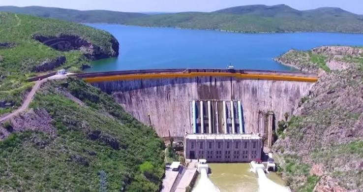

También le dicen Lago Toronto o Lago Colina, porque le pusieron Toronto por los ingenieros canadienses que vinieron a construirla.Ubicación: En el cauce del Río Conchos, en el municipio de San Francisco de Conchos, a unos 30 min de Camargo.Historia: Se empezó a construir en 1910, en plena Revolución Mexicana, por la Compañía Agrícola y de Fuerza Eléctrica del Río Conchos, y se terminó en 1916. En su época fue la presa más grande de América Latina.Datos técnicos: Mide 80 metros de altura, tiene capacidad de 2,903 millones de metros cúbicos, y cuenta con una central hidroeléctrica de 25 megawatts. Es propiedad de CFE.Para qué sirve: Guarda agua para el Distrito de Riego 005 (Delicias, Camargo, Jiménez), genera luz y controla inundaciones. Por eso siempre está en noticias cuando baja mucho el nivel.Ahora mismo está en recuperación, anda como en 25% de su capacidad con 720 millones de metros cúbicos, pero ha subido más de 2 metros en las últimas semanas por las lluvias del Conchos.
Principales Atracrivos y Actividades
1.- Paseos en lancha por el embalse - Es lo más típico, rentas lancha y recorres el Lago Toronto
2.- Pesca deportiva - Hay lobina negra, bagre, carpa, mojarra. Se pesca muy temprano o en la tarde, y recomiendan ir con guía local
3.- Deportes acuáticos extremos - Esquí acuático, moto acuática, kayak, natación y hasta buceo
4.- Senderismo y Trail - Hay rutas alrededor de la presa y cada año hacen el Boquilla Trail Run de 7 y 14 km
5.- Camping y cabañas - Hay más de 120 cabañas alrededor, palapas, asadores, restaurantes. En Semana Santa se llena hasta con 30 mil personas
6.- Festivales - Acaban de hacer el Festival del Pescado 2026, con música norteña, sierreño, juegos para niños y comida de pescado frito y caldo de oso
7.- Acampar y hacer carnita asada - Zona de asadores y área para hacer pescado zarandeado viendo el lago